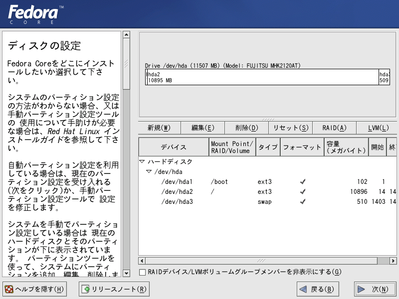
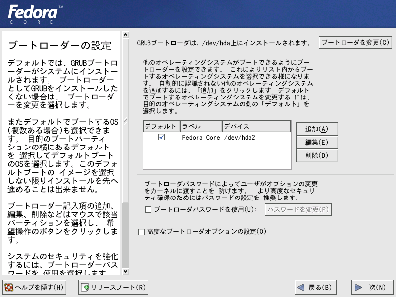
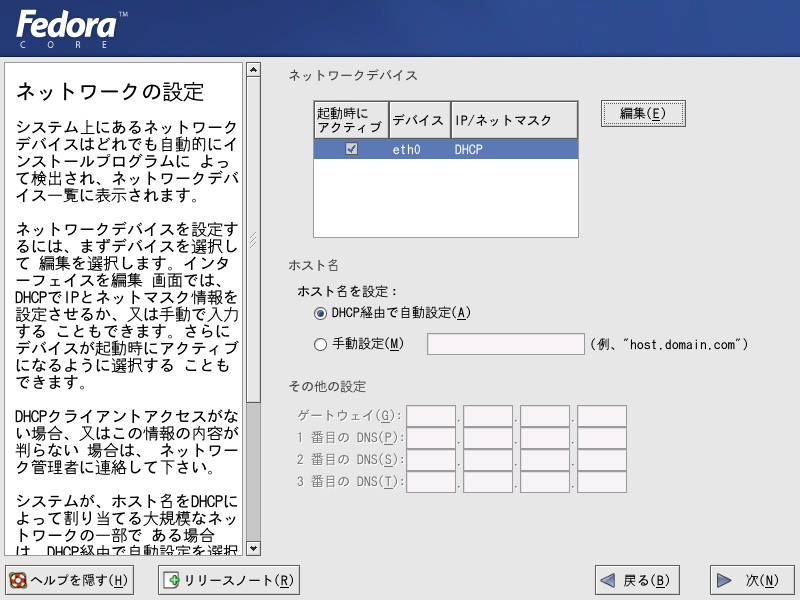

フェドーラ リナックス（Yarrow)のインストール手順について その（４）
１０．設定されるパーティションが表示されます。自動設定する場合には、このまま次に進みます。

１１．ブートローダーの設定
すでにハードディスクにウインドウズがインストール済みで、Linuxとのデュアルブートにしようとする場合には、必ずブートローダーをインストールします。OSが複数存在する場合には、デフォルトのチェックを変更することで、起動する際、自動的に立ち上がるOSを選べます。編集ボタンをクリックすることで、ラベルを自由に書き換えられます。

１２．ネットワークカードが接続されていて、自動的に認識された場合には次の画面が表示されます。ネットワークの設定はインストール後でも可能なので、ここでの設定は省略可能です。

次へ<NEXT>